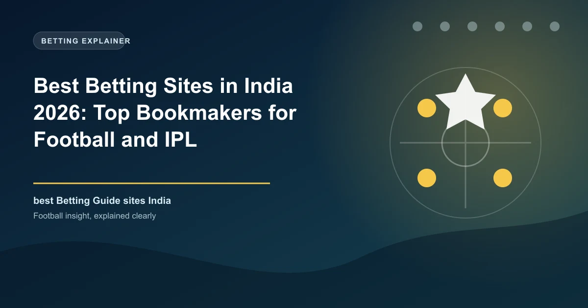

Best Betting Sites in India 2026: Top Bookmakers for Football and IPL

India has no federal betting sites directory, but offshore sportsbooks operating under international licences serve a huge and fast-growing audience of football and cricket punters. Here are the ten we rate highest for Indian bettors in 2026.

India is cricket's biggest market, but it is also one of the world's fastest-growing football betting markets, fuelled by the Indian Super League, the Premier League's massive domestic following, and mobile-first bettors who pay through UPI. Because there is no central federal law licensing domestic sportsbooks, the operators Indian punters actually use are almost all offshore brands running under Curacao, Malta or Isle of Man licences.
That context decides how you should choose a site. The quality markers that matter are a reputable international licence, genuine UPI and INR deposits and withdrawals, dependable payout speed after KYC, and clean bonus terms. This guide ranks the ten best operators for Indian bettors in 2026 based on funded-account testing of UPI deposits, IPL and football markets, and IMPS withdrawal speeds.
India Betting at a Glance
| Factor | Detail |
|---|---|
| Currency | Indian Rupee (INR / ₹) |
| Legal framework | State-by-state; no federal licence for sportsbooks |
| Licences to look for | Curacao eGaming, Malta Gaming Authority, Isle of Man |
| Primary payments | UPI (GPay, PhonePe, Paytm), NetBanking, IMPS, RuPay |
| Popular payments abroad | Crypto (USDT, BTC, ETH) at crypto-first sites |
| Biggest sports | Cricket (IPL), football (ISL, EPL, La Liga), kabaddi, esports |
| Most-recommended entry | UPI deposits with sites that also pay out in INR |
Why Most Indian Betting Sites Are Offshore
The Public Gambling Act of 1867 frames most gambling as illegal, but it predates the internet entirely. The result is a fragmented patchwork: online betting is neither federally permitted nor federally banned, and a handful of states licence their own lotteries and games of skill. In practice, Indian players use internationally licensed offshore sportsbooks that localise their products with UPI cashiers, INR balances and Hindi-language interfaces. The most reputable of these hold Curacao eGaming, Malta Gaming Authority or Isle of Man licences and enforce KYC on withdrawals.
How We Ranked the Sites
Our panel tested each site with a funded account in 2026, making real UPI deposits between ₹500 and ₹10,000 and IMPS withdrawals, and scoring cricket (IPL) and football market depth, odds competitiveness, INR payment routing, bonus terms, mobile apps and payout speed after KYC.
The Top 10 Betting Sites in India, Ranked
1. Stake — Best for Crypto and Speed
Stake is the leading crypto-first sportsbook in India. Deposits and withdrawals in Bitcoin, Ethereum, USDT and other coins settle within minutes, and the welcome bonus runs to 200% up to ₹1,20,000. Cricket gets the sharpest treatment of any sport, with IPL-specific promotions such as First Ball Payout settled during the tournament. UPI is accepted for deposits (from around ₹1,000, with operator fees) but crypto is the recommended route on this platform.
- Welcome offer: 200% up to ₹1,20,000
- Withdrawals: crypto in minutes; UPI/bank slower
- Best for: crypto users, IPL props, instant payouts
2. 1xBet — India's Biggest Sportsbook
1xBet offers the widest sports menu of any operator serving India — thousands of markets daily across football, cricket and niche sports — with some of the most competitive odds in the market and full Hindi-language support. It is the rare site that supports both UPI deposits (from just ₹200) and UPI withdrawals (from ₹1,000), and the welcome runs to 400% up to ₹70,000 across four deposits.
- Welcome offer: 400% up to ₹70,000 across 4 deposits
- Payments: UPI, NetBanking, Paytm, cards, crypto, IMPS
- Best for: market depth, UPI withdrawals, Hindi interface
3. 4rabet — Best Mobile Experience
4rabet built its Indian reputation on a slick mobile app designed for fast in-play betting. The sports welcome is a 700% package across four deposits (up to ₹20,000), and IMPS withdrawals typically process within about 45 minutes after KYC. The site supports UPI at the top of the cashier and its interface is available in Hindi, Bengali, Tamil, Telugu, Kannada, Urdu and Marathi.
- Welcome offer: 700% sports package across 4 deposits
- Wagering: 7x at minimum odds 1.50
- Best for: mobile-first betting, quick in-play flows
4. Dafabet — Best for Cricket Exchange
Dafabet uniquely pairs a traditional sportsbook with a dedicated cricket exchange under an Isle of Man licence, letting experienced bettors take the other side of IPL markets at often-better prices. It has served Indian players since 2018 with a strong payout reputation, and the welcome bonus reaches 160% up to ₹16,000. Expect a ₹500 minimum deposit and 15x turnover on the bonus.
- Welcome offer: 160% up to ₹16,000
- Licence: Isle of Man
- Best for: exchange bettors and IPL value hunting
5. Megapari — Best Weekly Promotions
Megapari is the top choice for cricket bettors who value ongoing offers, anchored by a 75% weekly reload bonus up to ₹20,000 alongside a strong IPL menu. Deposits via UPI and NetBanking are near-instant, and the sportsbook keeps competitive football margins, making it a strong well-rounded second account.
- Welcome offer: deposit match; plus 75% weekly reload
- Best for: weekly value, cricket-first bettors
6. Parimatch — Best for Football Parlays
Parimatch covers more than 1,000 football matches daily with solid markets on the EPL, La Liga and the ISL, and it is the most consistent operator for football parlays among the top tier. Licensed in Cyprus, it offers INR deposits from ₹300 and a reputation for dependable withdrawals.
- Welcome offer: match bonus on first deposit
- Licence: Cyprus
- Best for: football parlays, trusted global brand
7. Crorebet — Unique Bet Insurance
Crorebet differentiates itself with a Bet Insurance feature that refunds part or all of your first losing bet, paired with simple registration and localised Indian bonuses. It is a younger brand with a Curacao licence, aimed squarely at new bettors who want a safety net while they learn.
- Best for: new bettors, first-bet protection
8. BiggerZ — Superbet-Style Combo
BiggerZ combines a sportsbook with a casino in one wallet and supports both UPI and up to 20 cryptocurrencies with near-limitless transactions. INR deposits and withdrawals are available, making it a versatile choice for players who flip between sports and casino action.
- Best for: crypto + UPI flexibility, casino-sports combo
9. Fun88 — Best Live Betting Exchange
Fun88 offers one of the better live betting platforms for Indian players, with fast in-play odds on cricket and football plus an active exchange. It is a familiar name across Asia and a dependable option for live traders.
- Best for: in-play betting, exchange markets
10. Rajabets — Lowest Entry Point
Rajabets makes the list for accessibility: a ₹100 minimum deposit is the lowest among the top names, with 100+ IPL markets and a 200% welcome bonus up to ₹1,00,000. UPI, IMPS and crypto are all supported.
- Welcome offer: 200% up to ₹1,00,000
- Minimum deposit: ₹100
Quick Comparison Table
| Site | Best For | Licence | Min Deposit | UPI | Payout Speed |
|---|---|---|---|---|---|
| Stake | Crypto & speed | Curacao | Crypto: none/UPI ₹1,000 | Yes | Crypto: minutes |
| 1xBet | Market depth | Curacao | ₹100–₹300 | Yes (deposit + withdrawal) | IMPS: under 24h |
| 4rabet | Mobile betting | Curacao | ₹300 | Yes | IMPS: ~45 min |
| Dafabet | Cricket exchange | Isle of Man | ₹500 | Yes | IMPS: 1–3 days |
| Megapari | Weekly promos | Curacao | ₹300 | Yes | IMPS: under 24h |
| Parimatch | Football parlays | Cyprus | ₹300 | Yes | INR: hours–1 day |
| Crorebet | Bet insurance | Curacao | ₹300 | Yes | Varies |
| BiggerZ | Crypto + UPI | Curacao | Varies | Yes | Crypto: instant |
| Fun88 | Live exchange | Curacao | Varies | Yes | Varies |
| Rajabets | Lowest entry | Curacao | ₹100 | Yes | Varies |
Payment Methods: UPI, IMPS and Crypto
UPI is the backbone of Indian online betting. You deposit by entering your UPI ID or scanning a QR code in GPay, PhonePe, Paytm or BHIM; funds land near-instantly. The main caveat is that some sites treat withdrawals via UPI itself as a premium feature — 1xBet and BetWinner are the notable brands that pay out via UPI while many others settle through IMPS or NetBanking. Keep your registered betting-account name identical to the UPI holder's name, or payouts can be delayed at KYC. Crypto (USDT, BTC, ETH) is the fastest route at Stake, 1xBet and BiggerZ, with withdrawals often clearing in minutes.
| Method | Deposit Speed | Typical Limits |
|---|---|---|
| UPI (GPay, PhonePe, Paytm, BHIM) | Near-instant | ₹100–₹1,000 minimums |
| IMPS / NetBanking | Min–hours; ~45 min at best sites | ₹300+ |
| RuPay, Visa, Mastercard | Instant | ₹500+ |
| USDT / BTC / ETH | Minutes | No effective minimum at Stake |
Pick Your Site by How You Play
| If You Want... | Top Choice | Runner-Up |
|---|---|---|
| Fastest payouts | Stake (crypto) | 4rabet (IMPS) |
| Deepest cricket markets | 1xBet | Megapari |
| Football parlays | Parimatch | 1xBet |
| Exchange betting | Dafabet | Fun88 |
| UPI-only banking | 1xBet | 4rabet |
| New bettor safety | Crorebet | Rajabets |
Football Betting on ISL and European Leagues
For football punters, the ISL is well priced across all ten sites during the season, but depth varies sharply. Parimatch and 1xBet carry the fullest football menus, including player props, correct score, cards and corners on Premier League and ISL fixtures. Bet365-style in-play depth is best found at 1xBet and 4rabet, whose apps update odds fastest during live play. If you mainly bet football singles and accas, pair a market-depth site (1xBet, Parimatch) with a fast-withdrawal site (Stake or 4rabet) and shop the line between them.
Responsible Gambling in India
Offshore operators still offer the standard responsible-gambling suite — deposit limits, time-outs and self-exclusion — and you should use them. Bet only what you can afford to lose, never chase losses by raising stakes, and if betting stops being enjoyable, take a break or seek support. Remember that regulation is fragmented locally, so your disputes rely on the operator's licence-holder terms and KYC process.
Frequently Asked Questions
Is online betting legal in India?
There is no federal law that creates a licence for sportsbooks, but also no nationwide ban. Legality is decided state by state, and most offshore operators serve India in a tolerated grey area. Telangana and Andhra Pradesh explicitly prohibit online gambling, so check your own state before depositing.
Which is the best betting site in India?
For most bettors, 1xBet offers the best combination of market depth and UPI support, while Stake is the fastest for crypto payouts and 4rabet offers the best mobile in-play experience. Choose by how you want to pay and what you want to bet on.
Can I use UPI to deposit and withdraw?
Yes. Nearly all top sites accept UPI deposits, but fewer support UPI withdrawals — 1xBet is the strongest example that does. Most other sites settle payouts through IMPS or NetBanking within hours to a day after KYC.
Which Indian states ban online betting?
Telangana and Andhra Pradesh are the most notable states with explicit bans on online gambling. Several other states are restrictive or unclear. Always verify the local position where you live.
Do Indian betting sites accept cricket and football?
Yes — cricket (especially IPL) is the most heavily priced sport, with ball-by-ball and player-prop markets, and football is covered deeply across the EPL, La Liga and the Indian Super League.
Put These Principles Into Practice Today
Every strategy on this page is only as good as the markets you apply it to. Check the latest predictions, odds, and in-play opportunities below.
Last updated: August 2026 | By Tochukwu Mesigo |
Build Winning Accumulator Tickets
Generate optimized accumulator combinations from today's data-driven predictions. Set your target odds and get instant ticket suggestions.
Pro Ticket Builder →